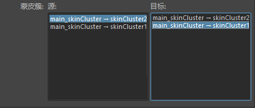

镜像平面
选择下列选项之一。
-
XY
- 指定围绕全局 XY 平面（默认值）镜像权重。
-
YZ
- 指定围绕全局 YZ 平面镜像权重。
-
XZ
- 指定围绕全局 XZ 平面镜像权重。
-
方向(Direction)
- “正值到负值”(Positive to Negative)（+Z 到 -Z）”指定沿指定的“镜像平面”(Mirror Across)平面进行镜像的方向。
曲面关联(Surface Association)
确定“曲面上最近的点”(Closest point on surface)如何使蒙皮对象相对两半上的曲面组件彼此相关。
-
曲面上最近的点(Closest point on surface)
- 查找在源曲面和目标曲面之间距离最近的点，并平滑地对这些点处的蒙皮权重插值。这是默认设置。
-
光线投射(Raycast)
- 使用光线投射算法确定两个曲面网格之间的采样点。这是 8.5 版本之前的 Maya 中默认的平滑关联。
-
最近组件(Closest component)
- 查找每个采样点处最近的顶点组件（多边形）或控制顶点 (NURBS)，并使用其无插值的蒙皮权重值。这是 8.5 版本之前的 Maya 中默认的非平滑关联。
影响关联(Influence Association)
确定影响蒙皮对象（即，骨架关节、影响对象等）的组件如何在源对象和目标对象之间相关联。
为了确定最佳相关性，“影响关联”(Influence Association)在最多两次迭代中发生。可以从每个级别旁边的下拉列表中为每次迭代设定“影响关联”(Influence Association)类型。根据您对要比较的两个蒙皮对象的了解，设定“影响关联”(Influence Association)类型。在每次迭代完成之后，下一次迭代将在所有剩余的关节上继续使用其指定的“影响关联”(Influence Association)类型。如果确信仅需要一次迭代，则可以将另一个“影响关联”(Influence Association)级别设定为“无”(None)，这样就不会发生下一次迭代。
-
最近关节(Closest joint)
- 使彼此最为相似的关节相关联。这是第一个“影响关联”(Influence Association)的默认设置。
-
一对一(One to one)
- 在蒙皮对象具有相同的骨架层次的情况下使关节相关联。
-
标签(Label)
- 根据关节的预定义关节标签使关节相关联。可以在“属性编辑器”(Attribute Editor)中设置和编辑关节标签属性。
-
无(None)
- 指定对于该级别的“影响关联”(Influence Association)，将不会进行任何比较。
注： “绘制蒙皮权重工具”(Paint Skin Weights Tool)禁用了“反射”(Reflection)。可以使用“蒙皮 > 镜像蒙皮权重”(Skin > Mirror Skin Weights)作为替代方法以执行蒙皮权重的反射。
- 归一化(Normalize)
- 按比例归一化蒙皮权重，使得每个顶点的所有影响物的权重值总计为 1.0。例如，如果某顶点的影响物权重为 1.2 和 0.8，则将这两个值分别修改为 0.6 和 0.4。
- “蒙皮簇”(Skin Cluster)列表
-
-

“蒙皮簇”(Skin Cluster)列表包含“源”(Source)和“目标”(Target)列。
- 单击几何体以更新选定几何体的蒙皮簇列表，如下所示。
- “蒙皮簇”(Skin Cluster)列表
- 此处显示选定几何体上的蒙皮簇。
注： 如果未选择任何蒙皮簇，则此列表将保留为空。选择几何体以更新该列表。
- 最近添加的蒙皮簇将显示在列表的顶部。
-
- 源(Source)
- 选择要复制/镜像的蒙皮簇。
- 目标(Target)
- 复制/镜像属性应用到的蒙皮簇。